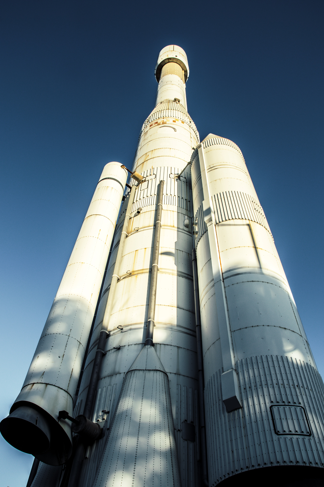

A Lua
▼
O Que É
A Lua é o único satélite natural da Terra e o quinto maior do Sistema Solar. É o maior satélite natural de um planeta no sistema solar em relação ao tamanho do seu corpo primário, tendo 27% do diâmetro e 60% da densidade da Terra, o que representa 1,23% da sua massa.
Características
A superfície lunar é basicamente constituída de rocha e recoberta por poeira fina. A Lua possui um núcleo interno sólido e rico em ferro com 240 km de raio e um núcleo externo fluido composto essencialmente por ferro em fusão e com um raio de aproximadamente 300 km. O núcleo é envolto por uma camada parcialmente em fusão com um raio de cerca de 500 km.
A hipótese que hoje em dia prevalece é a de que o sistema Terra- Lua se formou em resultado de um gigantesco impacto, durante qual um corpo do tamanho de Marte, denominado Theia, colidiu com a recém-formada proto-Terra, projetando material para a sua órbita que se aglutinou até formar a Lua. Modelos de computador do gigantesco cenário de impacto frequentemente afirmam que mais de 60% da lua deveria ser feita de material de Theia, mas a Lua e a Terra são um espelho de uma para o outra em sua composição, lançando dúvidas sobre uma origem principalmente de material lunar extraterrestre e, portanto, a única explicação de impacto.
Estudos e Exploração
O desenvolvimento da astronomia teve início com a necessidade de se compreender os ciclos lunares. Por volta do século V a.C., os astrónomos babilónicos tinham já registado o ciclo de Saros dos eclipses lunares, que decorria ao longo de dezoito anos, enquanto que astrónomos indianos tinham já descrito o alongamento mensal da Lua. O astrónomo chinês Shi Shen (séc. IV a.C.) forneceu instruções sobre como prever eclipses solares e lunares. Posteriormente veio-se a compreender a forma física da lua e a razão do luar.
União Soviética
A corrida espacial entre a União Soviética e os Estados Unidos, impulsionada pela Guerra Fria, levou a uma precipitação no interesse pela exploração lunar. A partir do momento em que se construíram lançadores com a capacidade necessária, ambas as nações iniciaram o envio de diversas sondas não tripuladas, tanto para missões de sobrevoo como de impacto ou alunagem. As naves do programa soviético Luna foram as primeiras a cumprir uma série de objetivos: posteriormente a uma série de missões mal sucedidas em 1958, o primeiro objeto construído pelo Homem a escapar à gravidade terrestre e a se aproximar da Lua foi a sonda Luna 1; o primeiro objeto a se despenhar contra a superfície lunar foi a Luna 2; e as primeiras fotografias do até então desconhecido lado oculto foram obtidas pela Luna 3, todos os eventos ao longo de 1959. O primeiro objeto a alunar com sucesso foi a Luna 9 e o primeiro veículo não tripulado a orbitar a Lua foi a Luna 10, ambos em 1966. Três missões de retorno trouxeram de regresso à Terra amostras de rocha lunar (Luna 16 em 1970, Luna 20 em 1972 e Luna 24 em 1976), num total de 0,3 kg. O programa Lunokhod foi o responsável pela alunagem de dois rovers pioneiros, em 1970 e 1973.
Estados Unidos
Os Estados Unidos lançaram várias sondas não tripuladas de modo a obter dados tendo em vista uma eventual alunagem tripulada. O Programa Surveyor, coordenado pelo Jet Propulsion Laboratory, fez alunar a sua primeira sonda quatro meses após a Luna 9. Em paralelo, a NASA criou o programa tripulado Apollo, depois de uma série de testes tripulados e não tripulados em órbita terrestre. A posterior alunagem dos primeiros seres humanos na Lua em 1969 é vista por muitos como o culminar da corrida espacial. Neil Armstrong tornou-se a primeira pessoa a caminhar na lua, enquanto comandante da missão Apollo 11, às 02:56 UTC do dia 21 de julho de 1969. As missões Apollo 11 a 17 (exceto a Apollo 13 que teve que abortar a alunagem), trouxeram 382 kg de rocha e solo lunar, em 2 196 amostras individuais. A alunagem e respetivo regresso foi possibilitado por consideráveis progressos tecnológicos desde o início da década de 1960, em campos como a química de ablação, engenharia de software e tecnologia de reentrada atmosférica. Ao longo das missões Apollo, foram instalados na superfície lunar vários conjuntos de instrumentos científicos, como sismógrafos, magnetómetros e sondas de calor. A transmissão direta dos dados para a Terra foi interrompida em 1977 embora, como alguns instrumentos são passivos, ainda hoje são usados.

Curiosidades
O que é um eclipse lunar?
A Lua está a 30 Terras de distância da Terra.
É um fenômeno que ocorre quando a Terra fica entre o Sol e a Lua, e esta última é encoberta total ou parcialmente pela sombra do nosso planeta.
A distância da Lua para a Terra difere porque nosso satélite não orbita em um círculo perfeito. Mas, em média, daria para encaixar 30 Terras entre a Terra real e a Lua.

Como a Lua influencia nas marés?
Se a Terra fosse uma bola de basquete, a Lua seria uma bola de tênis.
Com a sua força gravitacional, a Lua "puxa" os oceanos em sua direção. Essa força tem a ver com a massa dos corpos e a distância entre eles. Quanto maior e mais perto, maior a força. As marés mais altas ocorrem quando Sol e Lua estão do mesmo lado da Terra, somando as suas forças.
A definição é baseada na escala de tamanho entre os objetos. Nessa mesma escala, a distância da Terra para a Lua seria de 23 pés e 9 polegadas, segundo a Nasa.